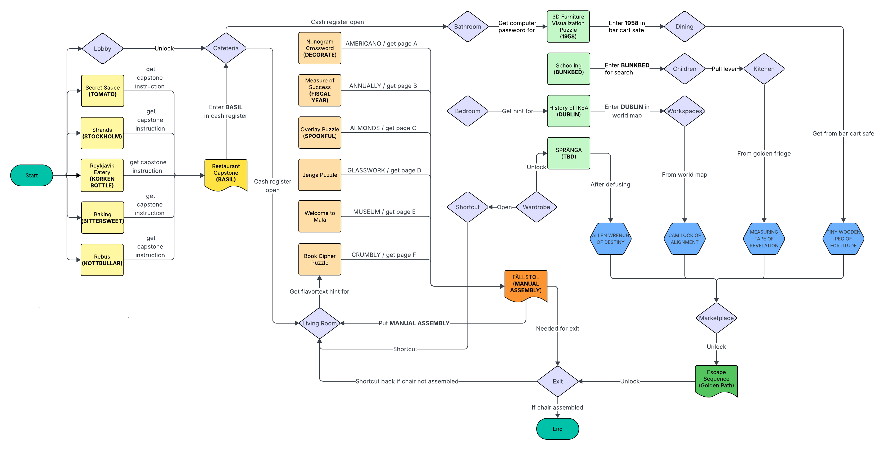
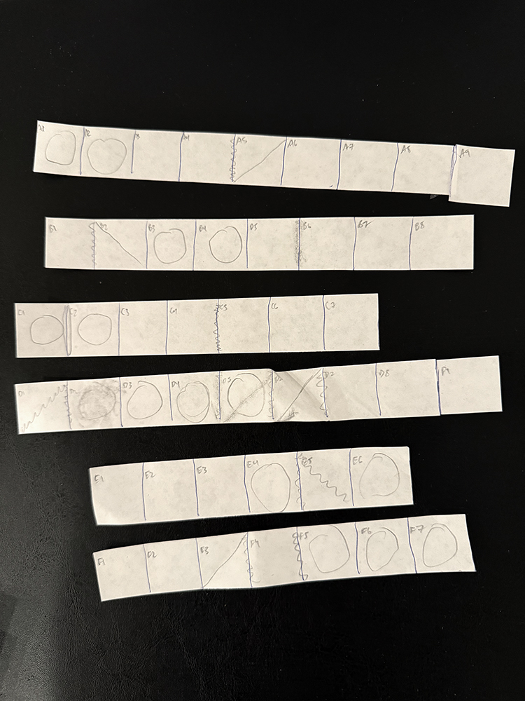
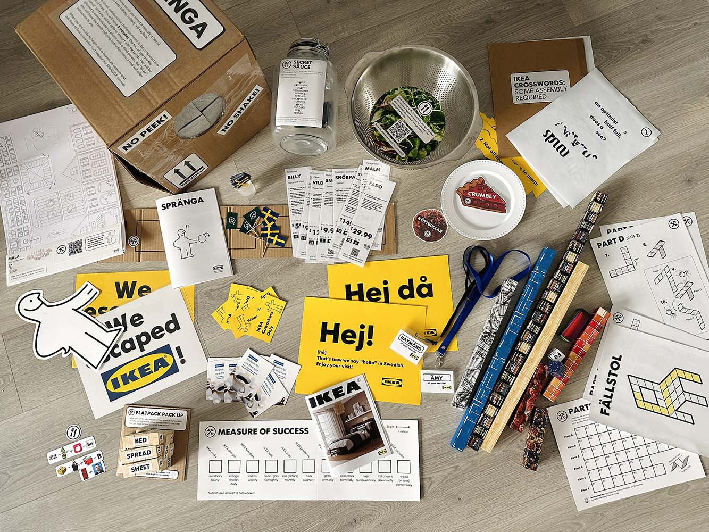
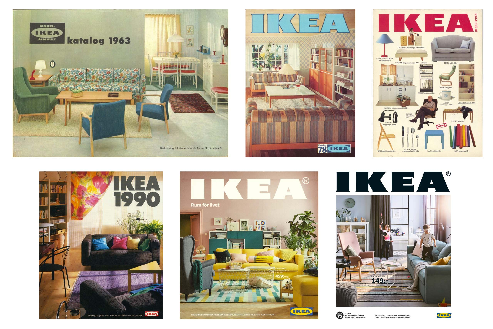
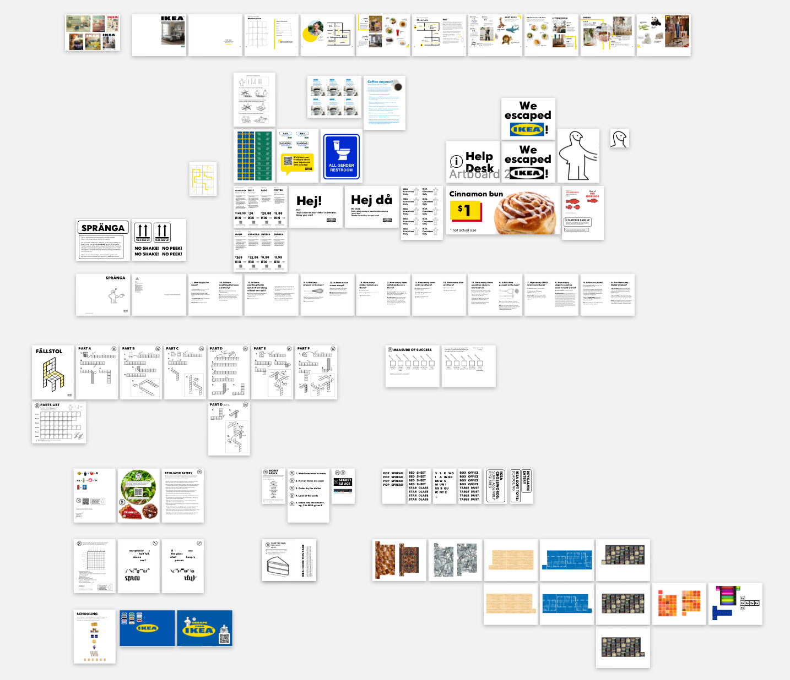
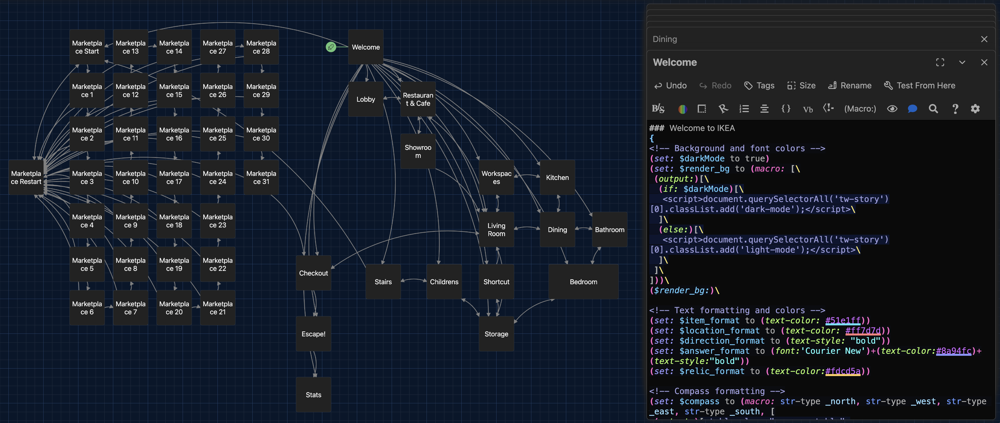
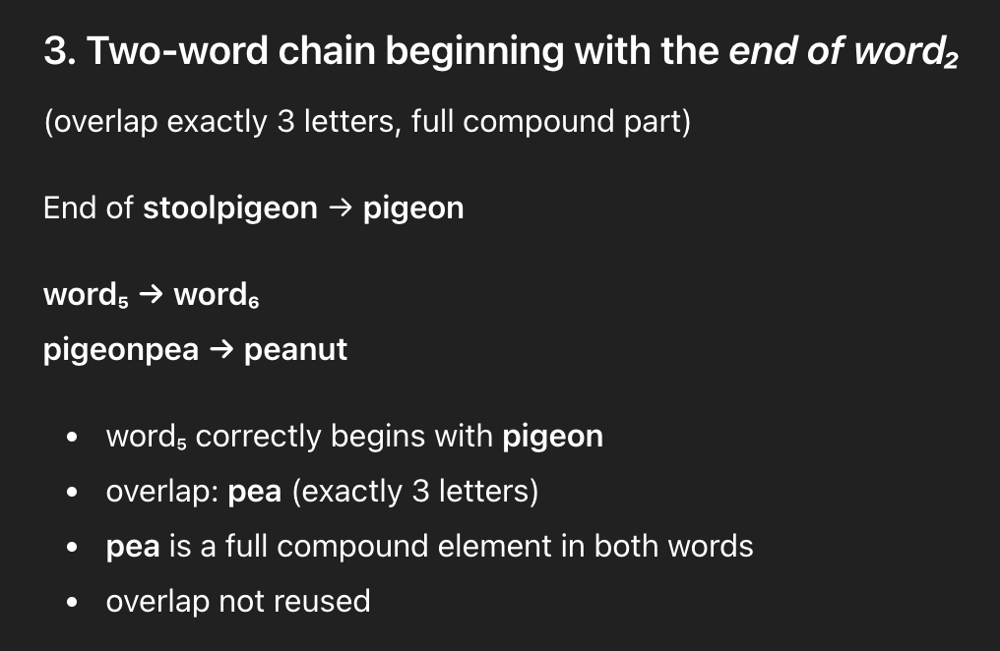

We hoped you enjoyed Escape from IKEA!
If you haven’t already, we’d love to hear from you on the experience. You can take the feedback survey here.
Story and Puzzle Design
Amy has had the idea of creating an IKEA themed escape room for quite some time. Whenever we’ve gone to IKEA, we’ve always noted how labyrinthian it is (it even has shortcuts!).
Sometime in late December 2025, when we were in San Diego, we decided to finally execute on this project. The first main idea that we knew we wanted to include in the hunt was having a chair that was constructed from extra pieces. So we knew that we would have to at least design part of the escape room around puzzles that would have “spare parts” which could be fed into the chair construction. Given the limited room in our house, the idea of having some parts of the escape be via a text-based RPG also became a central focus.
Our other general principles in designing the hunt were in rough order of importance:
- Be accessible enough for newcomers to be able to escape within a reasonable time limit (and to hopefully inspire our friends to do more puzzle hunts and escape rooms).
- Have a very flat unlock structure so that 10-15 people could all be engaged in something and not feel like they were just watching others solve things.
- Straddle the line between escape room style puzzles and puzzlehunt style puzzles but lean more towards the former. Meaning more interactive elements and little to no reliance on external sources/the internet.
The final unlock structure of the escape room didn’t actually get formulated until about a week before. The below shows the rough design:
Some notable structural changes:
- The text-based RPG idea started out as a single puzzle, then became the capstone puzzle when we thought that the hunt would have only one round, and finally evolved into this overarching framing for the entire story that became interlinked with the real world puzzles. We really liked the structure that we eventually settled on, where some RPG elements received answers from the real world, some hinted to or unlocked a real world interaction, and still others were completely for fun.
- The chair construction originally unlocked one of the IKEA relics, but we felt like solving it took an outsized amount of time as compared to the other relics, since you needed to finish up to 6 feeder puzzles and actually put the chair together. Our first thought was to upgrade it to be a “super relic” which could be used in place of any other relic and only require 3 out of the 4 for escape. However, we are self-indulgent and decided to force people to do all of the puzzles we put together so instead we made the chair a separate escape requirement.
Inspiration
When creating these puzzles, we wanted the solving process to evoke some of the core actions and essence of the IKEA experience such as: following pictographic instruction manuals, especially under duress, as well as measuring, stacking, assembling, and other construction-related tasks.
Some of the puzzles were directly inspired by IKEA items. For example, the MÅLA cardboard town is an actual IKEA product and when we saw it, we knew that it was something that we could create a puzzle around.
Other puzzles only found their connection to IKEA after the fact. We had a vague idea to incorporate temperature sensitive ink and ask people to either heat or cool an object to reveal a hidden message. It was only after committing to the concept and running many tests on different solutions of lemon juice and baking soda in our oven that we found the IKEA Cook this Page campaign, which was the perfect framing for why one might need to bake a piece of paper.
Lastly, some credits for puzzles which were heavily inspired by or mostly ripped off from other sources:
- Secret Sauce is adapted from a Puzzled Pint April 2011 puzzle of the same name.
- Flatpack Pack Up was originally inspired by Some Assembly Required from Puzzled Pint March 2022 but quickly diverged. After the puzzle was written, we learned that IKEA has their own Flatpack Challenge game, where you try to stack as many rectangular blocks as densely as possible.
- SPRÄNGA (the bomb) was an obvious tribute to the game Keep Talking and Nobody Explodes.
- The maze escape sequence using the “IKEA yellow path” in the catalog is from the video game Tunic.
FÄLLSTOL (The Chair)
Construction puzzles are the bane of Raymond’s existence so naturally he decided to create it. A lot of inspiration was taken from Botany from Teammate 2025 which was also a metapuzzle that involved taking letters written onto strips of paper and folding them. We had no constraints for the inputs (especially since they were going to be “extra pieces” from feeder puzzles) so we started by constructing a chair.
The main constraints we had were:
- The constructed results should obvious be a chair at first glance
- The answer had to use some letters from all component strips - unlike a traditional puzzle hunt, we wanted the chair to only be solvable after all pieces were acquired and assembled
- When constructed out of cardstock, the chair should be able to stand on its own
After prototyping a chair construction that used 6 strips of paper, we wanted to come up with an appropriate answer. The main goal was to have an answer on the chair that was fairly straightforward to read (from the top corner of the chair’s backrest to one of the legs). Given the size of the chair (4x4 backrest, 4x3 seat, and four 1x3 legs), we wanted a 13 or 14 letter answer. With the help of OneLook, we found an answer we loved - MANUAL ASSEMBLY.
Next came the tricky part of tweaking the size and placement of each piece so that we could construct the input answers. We debated whether there would be letters on the squares that were covered up or folded over, and eventually settled on simplifying the solving experience by having every square have a letter and for any overlapping squares in the construction to always have the same letter.

We chose the name FÄLLSTOL since it means “folding chair” in Swedish, a fitting name for the origami construction puzzle.
Art and Assembly
One of our favorite aspects of escape rooms beyond just the thrill of solving puzzles is their ability to transport you to an alternate world where anything is possible. A large part of that immersion is building art and props that are believable to the setting, allowing for that magical moment where you realize that something which looks mundane is actually a puzzle or clue in disguise. IKEA has such a playful and vibrant visual language and we (mostly Amy) were extremely excited to get to design puzzle components and IRL room decor in their style.
The Catalog
When we were ideating on a puzzle that would involve looking up IKEA furniture names (this eventually became Reykjavik Eatery), we were close to scrapping the concept because having to manually identify items in IKEA’s massive list of products sounded supremely unfun. As an offhand comment, one of us suggested that we could just make our own mini IKEA catalog and show only the things we cared about. And thus the idea was born.
The iconic IKEA catalog (sadly discontinued in 2021) was an annual publication showcasing their products in glorious glossy full color print. When designing our own catalog, we referenced the archive of the last 70+ years of catalogs for inspiration on the layout. A few examples, including the 2019 cover that our catalog is based off of:
It was an interesting challenge to hide multiple puzzles inside the pages whilst still making it look believably like a real magazine. In particular, we tried to strike a balance between creating an aesthetically beautiful layout and not including too much fluff to wade through or accidentally introducing red herrings. The IKEA yellow path running through each page was built simultaneously with the overall page design by placing the more constrained paths into the grid first, such as the showroom map, and then linking them up together with simpler path pieces on the remaining pages.
Once everything was designed, we manually rearranged the half pages into page order for booklet printing[1]. At the last minute while we were getting ready to print, we unexpectedly had to manifest designs for two more pages because we forgot that everything needed to be printed double sided and we had an odd number of front/back sides.
All of the designs were laid out using Sketch, a now mostly defunct prototyping tool that’s similar to Figma. The final design file for all of the assets we made has over eighty artboards(!)
For typesetting, we learned that IKEA has their own custom font; it’s called IKEA Sans, designed by Robin Nicholas. Sadly it isn’t available for public use, but it’s pretty close to Futura and this knockoff IKEA Sans.
The Showroom
Another half-joke-that-became-a-reality was turning our guest bedroom into an IKEA showroom. Hilariously, almost all of the furniture in there is actually from IKEA so we had fun designing furniture tags for all of our IKEA pieces, as well as other directional signage such as the store’s welcome and goodbye signs.
We even did some reconnaissance in our local IKEA to make sure that the decor was lore accurate:
Measure of Success
Aside from the catalog, this puzzle had by far the most convoluted and elaborate physical construction to bring the eventual vision to life. One of the early puzzle concepts that was pitched was having something that requires measuring with those paper IKEA rulers, but this ended up being one of the last puzzles written. Eventually, we came up with the idea of having some fake stats about IKEA and creating a bar chart where you needed to measure the length of the bars.
After the puzzle was drafted, we realized that the longest bar would be a whopping 25 inches, corresponding to Y as the 25th letter of the alphabet. Of course, we could always tape together three pieces of paper but how cool would it be if the bar chart was three dimensional?? This led to a whole series of unforeseen issues like:
- Deciding to glue together 1 inch wooden cubes instead of getting a saw to cut wood pieces to size, but the cubes we got were slightly shy of 1 inch.
- Realizing that constructing the bars from 1 inch cubes would defeat the purpose of using the ruler since you could just count the cubes...
- Deciding to fix the above issue by covering each bar with a paper pattern to hide the number of cubes, but realizing the patterns we designed and fully printed out were too small. sigh
Honestly the whole construction was a bit of a disaster but we persisted due to having already sunk a lot of time into this concept and eventually got a workable end product.
Overlay Puzzle
The overlay puzzle required generating an ambigram. We used this nifty tool and then edited the result by hand to prioritize legibility of the “rightside up” orientation. A fun little easter egg: each of the construction puzzles was labeled with a hammer and wrench icon. You may have noticed that for the overlay puzzle, the icon was also split between the two pages, with one half showing only the hammer and the other side showing only the wrench.
Everything Else
Along the way, there was a ton of art-related scope creep as we kept coming up with more silly ideas, like a replica of the giant cinnamon bun sign with the “*not actual size” disclaimer[2], hiding some intentional red herrings a.k.a. Swedish Fish, and even dressing up as IKEA coworkers, which involved a Goodwill trip for yellow shirts and creating DIY employee nametags. We considered a multitude of nitpick details that were likely to go unnoticed, such as making sure all of the Swedish vowel sounds[3] that we added were phonetically plausible.
Side note: if you visit the IKEA website frequently for research purposes, every one of your targeted ads for the next few weeks will be an IKEA ad.
Tech
All of the code and tech assets can be found in this Github repo.
Welcome Video
The video segments were shot using Amy’s iPhone 14 and edited using iMovie.
Text-based RPG
We originally tossed around the idea of coding up our own text-based RPG (potentially setting up a server to support sessions to save your spot, multiplayer interactions like syncing actions across multiple people, etc). But we realized this was far too much for something that had to be developed in ~3 weeks.
We found Twine, an open-source tool for extending stories with branching narratives via conditional logic, multimedia like images and videos, and anything else HTML and Javascript could do. Twine comes with a built-in online editor UI and you can export Twine directly as HTML.
Twine offers several story formats - basically programming languages for how your logic gets implemented and converted to HTML. The default is Harlowe, which is fairly lightweight and doesn’t require knowledge of HTML, CSS, or Javascript. Looking back, Sugarcube or Snowman might have been better options to leverage our software background.
Given that this was our first foray into Twine, not everything was super polished. In particular, we struggled with some subtle issues in how Twine handles contiguous line break elements, which was causing some jittering when clicking links. After inspecting the HTML and adding some breakpoints in the DOM, we realized that the issue was caused by a mysterious interaction between Twine’s transition animation implementation and the interactive elements within the text that was being animated in.
Rather than, say, simply removing the transition animations, we wanted to try and fix the issue. After a lot more debugging in Twine’s not-particularly-ergonomic UI, we still don’t really understand why this problem was happening but were able to pinpoint the problematic CSS which Twine was applying. Thus, the “fix” was to export the final HTML file and then manually delete the relevant parts of the Twine script that were programmatically applying the CSS classes.
Måla Audio Tour
The audio tour idea came around since we lacked an auditory puzzle[4]. The audio voiceovers were recorded using the Easy Voice Recorder app on Raymond’s iPhone 16. Other free audio came from freesound and Zapsplat. The mixing was done in Audacity.
Customer Service Line
The phone number you call is a Google Voice number, and we uploaded a custom voicemail message which we recorded by putting the text into a text-to-speech tool or Google Translate for the Spanish part. Incidentally, this was produced before we started looking into audio editing software so the parts were stitched together on the fly by playing each audio source in order and hitting record.
3D Furniture Visualization
Of course, these were made using the actual IKEA room planning tools. Through the process of building these, we learned that there are actually three separate room designers: Kitchen Planner, Bathroom Planner, and IKEA Kreativ. While each tool has its own quirks, we found that by far the worst one was Bathroom Planner, which generates a new link each time you save changes, and sometimes wouldn’t even save at all due to an inexplicable error “the sofa could not be loaded”[5].
As an aside, perhaps you saw the somewhat questionable tandem toilet layout in the bathroom. There was some debate amongst room designers as to whether it would be preferable to have the toilets positioned side by side as you saw them, or alternatively in this knee-to-knee arrangement:
The jury’s still out on this one, and we welcome any input you may have on this important matter.
Everything Else
The other tech bits like the timer web page, the welcome page, and this page were primarily vibe coded using ChatGPT/Gemini. While we avoided using GenAI for most other tasks in the making of this escape room (OneLook and human ingenuity are much better at designing puzzles and designing around answer constraints, all art and design bits were handmade - see above, and story elements came up from our brainstorming), we had no qualms leveraging it for coding.
As an example, we tried to get ChatGPT to help come up with a set of words for Flatpack Pack Up (the Jenga puzzle), but even after spending a long time tweaking the prompt, the results were questionable at best:
Does anyone know what a pigeonpea is?
Conclusion
Overall, we had a really fun time putting this together. Both of us have participated in a lot of puzzlehunts and escape rooms, and have dabbled in creating simple, one-off puzzles for each other, but have never attempted anything of this scale before. The whole writing and development process was like what we assume the Disney imagineers feel like when they’re building a new ride, and the whole time we were picturing how all of you would react to whatever we were coming up with.
One thing that made the design process so successful and fulfilling is that we learned both of us are willing to fully commit to the bit in order to create a small moment of delight. There were many instances where one of us had a funny idea and then spent several hours making it happen for probably a few seconds of payoff[6]. This may sound like pretty bad ROI, but it reminds us of this great quote from Teller (of the magician duo Penn and Teller), “Sometimes magic is just someone spending more time than anyone else might reasonably expect.” We hope that we succeeded in injecting a bit of joy and magic into your experience today, whether it was from a satisfying “aha” moment or finding something that surprised you and defied your expectations.
As for what’s next, we’re already toying with the idea of running another experience like this... stay tuned!
Credits
- Editors In Chief: Amy Liu, Raymond Wu
- Puzzle Authors: Amy Liu, Raymond Wu
- Story: Amy Liu, Raymond Wu
- Art and Design: Amy Liu, Raymond Wu
- Factchecking: Amy Liu, Raymond Wu
- Tech: Amy Liu, Raymond Wu
- Logistics: Amy Liu, Raymond Wu
- Testsolving: Amy Liu, Raymond Wu
- Additional testsolving support: Catherine Wu
- Logistics: Amy Liu, Raymond Wu
- Catering: Amy Liu, Raymond Wu, and IKEA
Appendix
- Welcome video
-
Text-based RPG
- Restaurant (cash register): BASIL
- Dining (bar cart safe): 1958
- Children's: BUNKBED
- Workspaces (world map): DUBLIN
- Wardrobe (bomb): UNBOXING
- Living room (extra pieces): MANUALASSEMBLY
- Marketplace escape sequence: ENES WSEN ESES WSWS ESES WNWN ENWS ESWS
- Måla audio tour
Notes
- By “booklet printing”, we’re referring to how the pages should be printed front/back such that they read correctly when folded into a booklet. Some software such as Adobe InDesign will do this automagically for you, but instead we calculated the layout manually by folding the corresponding number of blank papers, labeling the page numbers, and then unfolding each sheet to see which page numbers should be placed adjacent to each other. ↩
- Every time we see this sign, it makes us chuckle and wonder what scenario had to have occurred with a customer getting angry that their $1 cinnamon roll wasn’t literally 10 feet in diameter in order to prompt IKEA to add this disclaimer. ↩
- Swedish uses three additional vowels on top of the basic Latin alphabet: å (pronounced like a long "o" as in "door"), ä (pronounced like the 'e' in "bed" or the 'a' in "cat,"), and ö (pronounced like the 'i' in "bird" or 'u' in "fur"). We learned that we’ve been pronouncing Blåhaj incorrectly this whole time! ↩
- Since the Måla audio tour relies on hearing, Secret Sauce uses taste/smell, SPRÄNGA uses touch, and most (all?) puzzles use sight, we managed to cover all five senses! ↩
- You cannot, in fact, add a sofa to your bathroom design. ↩
- Haha wouldn’t it be funny if there was a light switch in the RPG and all it does is switch the website into light mode? ↩